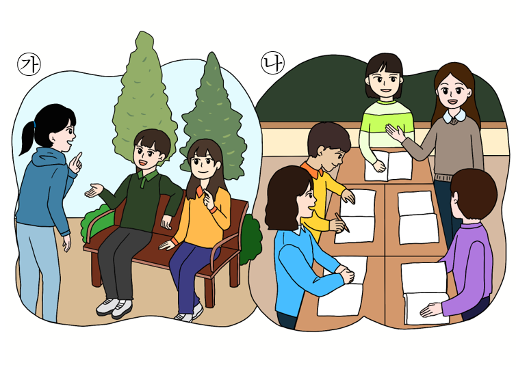

1번
그림 ㉮와 ㉯의 비슷한 점과 다른 점을 알맞게 짝지은 것을 고르세요.

개요
비슷한 점
다른 점
말하는 사람과 듣는 사람이 있다.
가
는 듣는 사람들이 친구들이다.
말하는 사람과 듣는 사람이 있다.
가
는 높임 표현을 사용하며 말한다.
말하는 사람과 듣는 사람이 있다.
나
는 여러 친구 앞에서 공식적으로 말한다.
듣는 사람이 친구들이다.
나
는 교실 밖에서 자유롭게 말한다.
듣는 사람이 친구들이다.
나
는 친구들과 개인적으로 말한다.